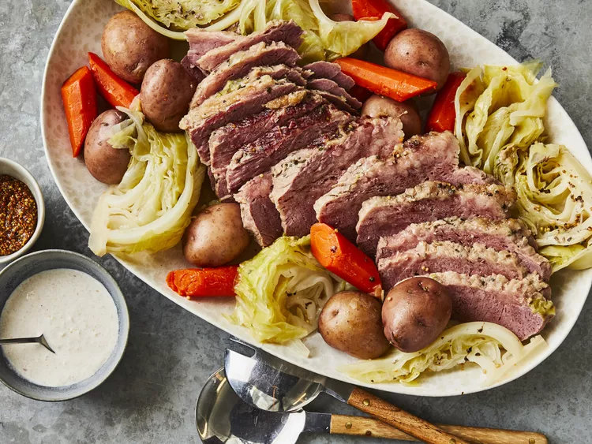

How To Cook The Best Meat

Recipe Description
Nyama Pro is a meat-loving dish that is made with the finest ingredients in the world.
Ingredients
Steps Nyama
- Wash the meat under cold water.
- Pat the meat dry with paper towels.
- Cut the meat into desired pieces or slices.
- Marinate the meat with your choice of spices and seasonings.
- Preheat a cooking pan or grill over medium heat.
- Cook the meat until it reaches the desired level of doneness.
- Let the cooked meat rest for a few minutes before serving.
- Garnish the meat with fresh herbs or sauce, if desired.
- Serve the meat hot and enjoy!
Pilau Ingredients
- Wash the rice under cold water until the water runs clear.
- Soak the rice in water for about 30 minutes to soften.
- Chop onions, garlic, and ginger finely.
- Heat oil in a cooking pot over medium heat.
- Add whole spices like cinnamon, cardamom, and cloves to the hot oil and sauté until fragrant.
- Add chopped onions, garlic, and ginger to the pot and sauté until golden brown.
- Add chopped tomatoes and cook until they soften.
- Drain the soaked rice and add it to the pot, stirring to coat the rice with the onion-tomato mixture.
- Add water or broth to the pot, along with salt, turmeric, cumin, and other spices according to taste.
- Bring the mixture to a boil, then reduce the heat to low, cover the pot, and simmer until the rice is cooked and the liquid is absorbed.
- Once cooked, fluff the pilau with a fork and let it rest for a few minutes before serving.
- Garnish with fresh cilantro or mint leaves before serving, if desired.
- Serve the pilau hot with your favorite accompaniments and enjoy!
Pancakes Ingredients
- Gather all the ingredients needed for making pancakes: flour, sugar, baking powder, salt, milk, eggs, and butter.
- In a large mixing bowl, whisk together the dry ingredients: flour, sugar, baking powder, and salt.
- In another bowl, beat the eggs and then add milk and melted butter, stirring until well combined.
- Pour the wet ingredients into the dry ingredients and stir until just combined. Do not overmix; a few lumps are okay.
- Preheat a non-stick griddle or skillet over medium heat and lightly grease with butter or cooking spray.
- Using a ladle or measuring cup, pour the pancake batter onto the hot griddle to form pancakes of desired size.
- Cook until bubbles form on the surface of the pancakes and the edges look set, then flip with a spatula and cook until golden brown on the other side.
- Transfer the cooked pancakes to a plate and keep warm while you cook the remaining batter.
- Serve the pancakes hot with your favorite toppings, such as maple syrup, fresh fruits, whipped cream, or chocolate chips.
- Enjoy your delicious homemade pancakes for breakfast or any time of the day!